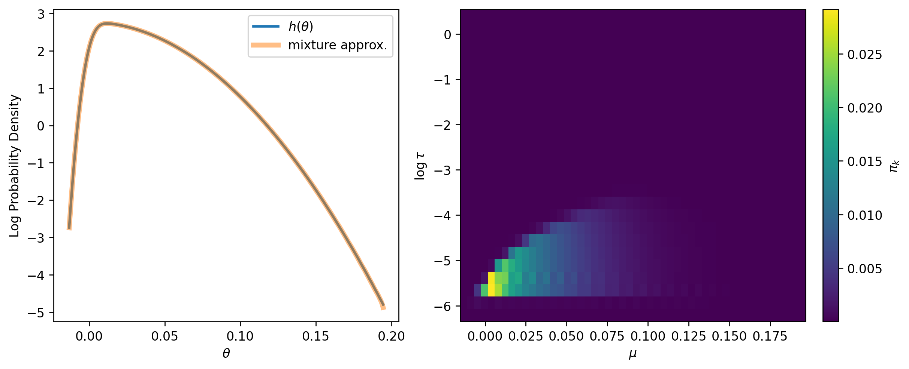
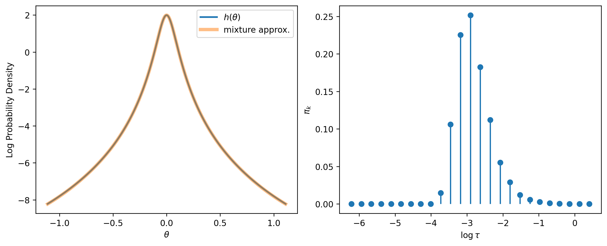
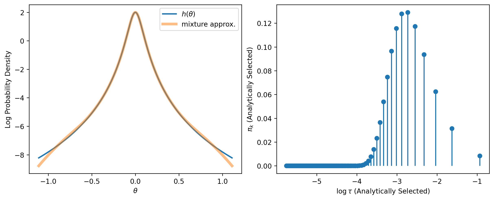
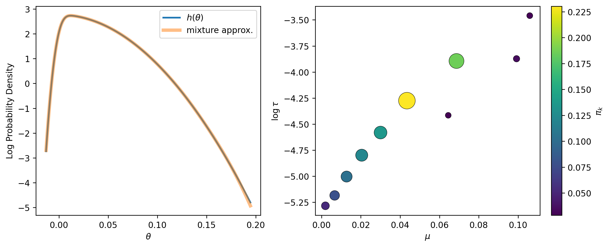
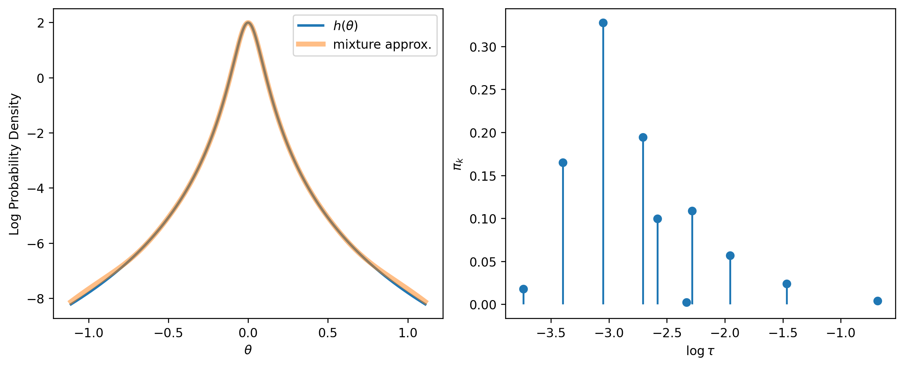

Brief Background
Consider the following Bayesian model:
\[ \hat \theta \mid \theta \sim \operatorname{Normal}(\theta, s) \] \[ \theta \sim g(\theta) \]
When the prior is gaussian, \(g(\theta) = \varphi(\theta; \mu, \tau^2)\), then we have the conjugate normal model. The posterior is gaussian, with variance and mean
\[ \tilde \tau^2 = \left( \dfrac{1}{s^2} + \dfrac{1}{\tau^2}\right)^{-1} \]
\[ \tilde \mu = \tilde \tau^2 \left( \dfrac{\hat \theta}{s^2} + \dfrac{\mu}{\tau^2}\right) \]
When \(g\) is a mixture of gaussians, then the posterior is also a mixture of gaussians
\[ \begin{align} g(\theta) &= \sum_{k=1}^K \pi_k\, \varphi(\theta; \mu_k, \tau_k^2) \\ &\text{subject to}\quad \sum_{k=1}^K \pi_k = 1,\quad \pi_k > 0\ \forall k\\ \Pr(\theta \mid \hat\theta) &= \sum_{k=1}^K w_k\, \varphi(\theta;\tilde\mu_k,\tilde\tau_k) \end{align} \]
where \[ \begin{aligned} \tilde\tau_k^2 &= \left(\frac{1}{s^2} + \frac{1}{\tau_k^2}\right)^{-1}, \\ \tilde\mu_k &= \tilde\tau_k^2 \left(\frac{\hat\theta}{s^2} + \frac{\mu_k}{\tau_k^2}\right), \\ w_k &= \frac{\pi_k\,\varphi\!\left(\hat\theta; \mu_k, \sqrt{s^2+\tau_k^2}\right)}{\sum_{j=1}^K \pi_j\,\varphi\!\left(\hat\theta; \mu_j, \sqrt{s^2+\tau_j^2}\right)}. \end{aligned} \]
We have established that if we can successfully approximate some target probability density, \(h(\theta)\), with a mixture of gaussians then we can use that mixture as a prior and effectibly obtain a posterior as a sequence of conjugate normal updates.
The question then becomes how do we determine the parameters: \(K\), \(\pi_k\), \(\mu_k\) and \(\tau_k\)?
I currently am thinking of two ways. I should say that for our implementation in production, either approach will suffice and the choice between the two approaches is really about what kind of story we want to tell in our MIT CODE submission.
Convex Optimization Over \(\pi_k\)
Generally, we want to find a \(g(\theta)\) which minimizes some squared loss criterion, such as
\[\int_\theta (g(\theta) - h(\theta))^2 \, d \theta \approx \Delta \theta \sum_{i=1}^N (g(\theta_i) - h(\theta_i))^2 \>.\]
Note that squared loss is a convex loss function. Convexity is nice because there are a lot of tools we can use to solve convex optimization problems. However, if we jointly optimize over all parameters (assuming \(K\) is set in advance), the resulting objective function is non-convex.
The primary source of this non-convexity comes from the Gaussian’s parameters \(\mu_k\) and \(\tau_k\) and this makes the optimization tricky (although not impossible). However, if we specify \(\mu_k\) and \(\tau_k\) in advance, we can create a (large) set of fixed basis functions. The problem then turns into how best to weight those basis functions. Since the mixture density is linear in the weights \(\pi_k\), the squared loss reduces to a strictly convex quadratic function of \(\pi_k\). Furthermore, because the \(\pi_k\) live on the \(K\)-dimensional simplex, and the simplex is a convex set, we are left with a highly tractable convex optimization problem.
More formally, consturct a mesh \(\theta_1, \cdots, \theta_N\) over which to evaluate the target density, so that \(h_n = h(\theta_n)\). Specify a set of parameters \(\left\{ (\mu_k, \tau_k) \right\}_{k=1}^K\), and let \(A\) be the matrix such that \(A_{n, k} = \varphi(\theta_n; \mu_k, \tau^2_k)\). We seek to solve the quadratic program
\[\begin{aligned} \min_{\boldsymbol{\pi}} \quad & \frac{1}{2} \boldsymbol{\pi}^\top (A^\top A) \boldsymbol{\pi} - (A^\top \boldsymbol{h})^\top \boldsymbol{\pi} \\ \text{subject to} \quad & \mathbf{1}^\top \boldsymbol{\pi} = 1, \\ & \boldsymbol{\pi} \ge \mathbf{0} \>. \end{aligned}\]This can be done with numerous off the shelf quadratic program solvers, and we can ensure that \(A^\top A\) is positive definite by adding a small ridge pentalty.
There are pros and cons:
Convexity guarentees a global optimum. No fiddling with initializations or getting stuck in local optima. Convexity is a really big benefit here.
Grid of parameters requires some thought. The fit from this approach can be poor unless we give some thought to how to specify the grid of means and standard deviations for the mixture components. In the example below, we truncate the evaluation mesh at the \(0.01\%\) and \(99.99\%\) quantiles of \(h\), place means evenly on that same interval, take component standard deviations on a log-spaced grid from \(0.04s\) to \(30s\) (where \(s\) is a natural scale for the target), and form the dictionary as the full Cartesian product of those means and scales.
The size of the basis is potentially larger than we need. We can use heuristics to solve this, for example we can solve the optimization, identify the “active set” (those basis functions with materially large weights), and then refit the model on the active set only. This can reduce the basis appreciably depending on the size of the grid without much in the way of sacrificing fit.
Below is an example of using this procedure to fit a skew normal distirbution. Here are some of the finer details:
The target is a skew-normal with shape \(a = 10\), location \(0\), and scale \(s = 0.05\). We evaluate both \(h(\theta)\) and the mixture approximation on a mesh of \(N = 2000\) equally spaced points over \(\left[H^{-1}(\alpha), H^{-1}(1-\alpha)\right]\), where \(H\) is the target CDF and \(\alpha = 10^{-4}\). Truncating at the \(0.01\%\) and \(99.99\%\) quantiles keeps the mesh focused on the bulk of the density without wasting basis functions in the far tails.
The component dictionary is a Cartesian product of means and scales. We place \(50\) means evenly from the lower to upper percentile endpoints above—the same support as the evaluation mesh, rather than uniform percentiles of \(h\) itself (which would be similar here but is not identical). We use \(25\) component standard deviations on a log-spaced grid from \(0.04s\) to \(30s\), so the basis spans narrow peaks through broad shoulders. Each mean is paired with every scale, giving \(K = 50 \times 25 = 1250\) basis functions and a design matrix \(A\) with entries \(A_{n,k} = \varphi(\theta_n; \mu_k, \tau_k^2)\).
With \(A\) and \(\boldsymbol{h} = (h(\theta_1), \ldots, h(\theta_N))^\top\) fixed, we solve the quadratic program from above. The Hessian \(A^\top A\) can be rank-deficient when many components overlap, so we add a small ridge term proportional to the mean diagonal entry of \(A^\top A\) before calling a standard QP solver (cvxopt via qpsolvers). The solution \(\boldsymbol{\pi}\) is constrained to the simplex, so weights are automatically non-negative and sum to one.
The left panel plots \(\log h(\theta)\) against \(\log g(\theta)\) on the evaluation mesh. The right panel shows the fitted weights \(\pi_k\) on the \((\mu, \log \tau)\) grid as a heatmap, which makes it easy to see which regions of the dictionary the optimizer activates.
Our main application will be approximating a Student’s-\(t\) distirbution, so we can make a simplifying assumption that \(\mu_k=0 \> \forall k\). This can greatly shrink the size of the basis from a few thousand to a few dozen. As you can see below, we can get away with fitting a Student’s-\(t\) with ~ 10 basis functions.

As a small aside, we can approximate the Student’s-\(t\) using Gauss-Laguerre Quadrature and completely avoid the optimization. However, this requires many many more basis functions that we might use via the optimization approach. Below, I use Gauss-Laguerre Quadrature to determine the basis functions.

So far as our paper goes, the convex optimization approach tells a very nice story of approximating arbitrary probability densities obeying mild regularity conditions supported on the real line. The trade off is that you need a big basis set. In my opinion, this is not a big deal. Even if you didn’t use some sort of heuristic to shrink the basis via using the active set, all the weights, means, and standard deviations stored in a databaase and the math is the same, the loop is just a little longer. I personally like this approach because of the flexibility and guarentees provided by the convexity.
Optimize All Parameters Jointly
The alternative is to optimize over \(\pi_k\), \(\mu_k\), and \(\tau_k\) jointly. With \(K\) fixed in advance, we minimize the same discrete squared loss on the evaluation mesh as above, but now the objective is non-convex because the mixture density is nonlinear in the Gaussian parameters. We use SLSQP from scipy.optimize, supplying an analytical Jacobian of the loss with respect to \((\pi_k, \mu_k, \tau_k)\).
Several constraints keep the problem well posed. The weights must lie on the simplex: \(\pi_k \in [0, 1]\) and \(\sum_k \pi_k = 1\), enforced as box bounds plus an equality constraint. Each mean is restricted to the evaluation interval \(\left[H^{-1}(\alpha), H^{-1}(1-\alpha)\right]\), and each scale is restricted to \(\tau_k \in [0.04s, 30s]\), matching the scale grid used in the convex dictionary fit. It is important that the upper bound on \(\tau_k\) be wide enough to cover the tail; capping scales at the mesh width alone is too restrictive and produces poor fits.
Initialization also matters. We start each component with equal weight \(1/K\), place means at quantiles of the target between \(\alpha\) and \(1 - 10\alpha\), and take scales on a log-spaced grid from \(0.04s\) to \(30s\). Because the problem is non-convex, a single run from this starting point can stall in a bad local optimum. We therefore repeat the optimization from several random perturbations of the initial \((\mu_k, \tau_k)\), renormalizing the weights after each perturbation, and retain the fit with the lowest loss.
Below we refit the same skew-normal target as above, now with \(K = 10\) free components.

For a symmetric Student’s-\(t\) target we can carry the same joint approach over, but now fix \(\mu_k = 0\) for every component and optimize only over \((\pi_k, \tau_k)\). The constraints and initialization are the same as above, restricted to weights and scales: \(\pi_k \in [0, 1]\) with \(\sum_k \pi_k = 1\), \(\tau_k \in [0.04s, 30s]\), equal initial weights, log-spaced initial scales, and random restarts that perturb only \(\tau_k\). Below we fit the same Student-\(t_3\) target with \(K = 10\) zero-mean components.

There are pros and cons:
Setting \(K\). We will need a heuristic with which to choose \(K\). This means running multiple optimizations, which is risky since the problem is non-convex and may land in a local optima. Although we can try to skirt this via the perturbation approach, its a real risk especially as the dimensionality increases.
Small basis. If the optimization is successful, we can limit the size of the basis, even for priors outside the Student’s-\(t\) distribution. I feel it is neccesary to remind you though that the math stays the same no matter if \(K=6\) or \(K=600\). So far as the user is concerned, we are just using \(h(\theta)\) as the prior so the size of the basis, from where I stand, is irrelevant and small \(K\) is only nice if you have to do these calculations manually (which I don’t think you would ever wantt to). Even if a customer wanted to know the weights and parameters for our approximation, that’s a simple query ande export.